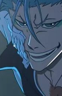
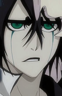

Selecione um personagem
- 
- 
Ichigo Kurosaki
Ichigo é o protagonista de Bleach e é conhecido como o Shinigami Substituto, Um Shinigami que contém poderes Hollow, Quincy e Fullbringer. O dono da espada Zangetsu, e vive gritando.
Ichigo é o protagonista de Bleach e é conhecido como o Shinigami Substituto, Um Shinigami que contém poderes Hollow, Quincy e Fullbringer. O dono da espada Zangetsu, e vive gritando.